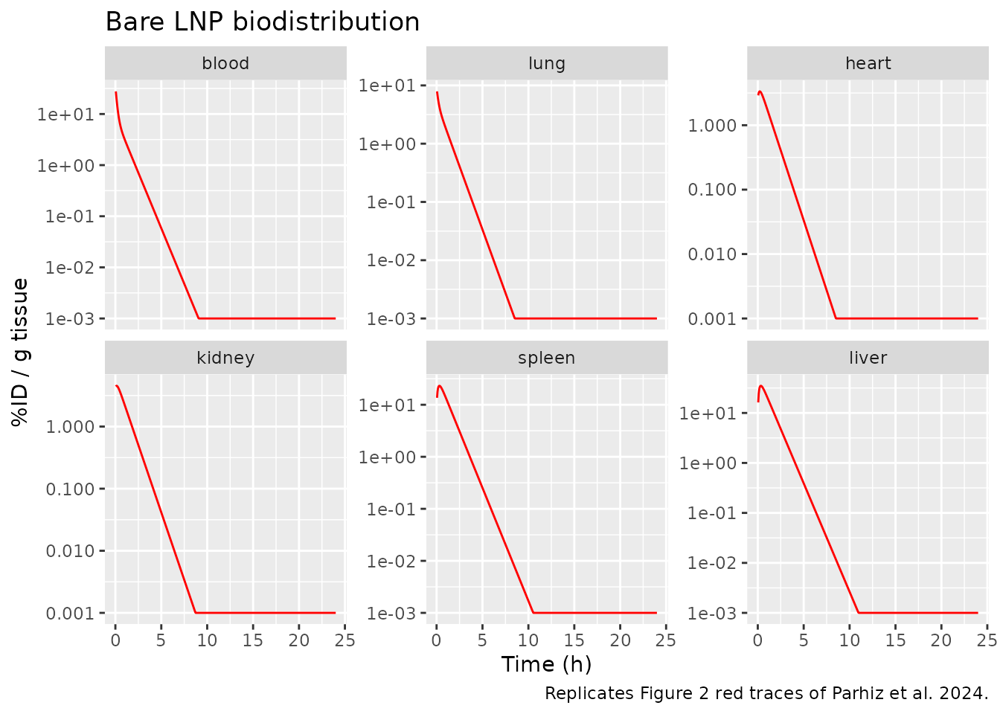
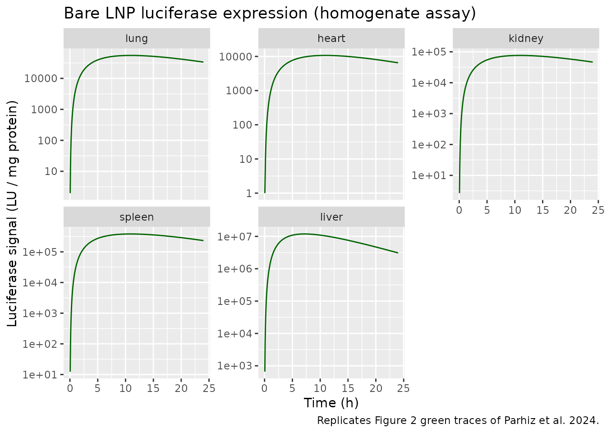

Model and source
- Citation: Parhiz H, Shuvaev VV, Li Q, et al. Physiologically based modeling of LNP-mediated delivery of mRNA in the vascular system. Molecular Therapy: Nucleic Acids. 2024;35(2):102175. doi:10.1016/j.omtn.2024.102175. Open access (CC BY-NC-ND).
- Article: https://doi.org/10.1016/j.omtn.2024.102175
- Supplemental information (Document S1, Figures S1-S3 + Tables S1-S4) and the ADAPT 5 source code (Data S1, mmc2.zip) are archived with the article and on PMC: https://pmc.ncbi.nlm.nih.gov/articles/PMC10992703/.
This vignette validates the Parhiz et al. 2024 whole-body PBPK and
luciferase-expression model in mice for the bare (untargeted) LNP
parameterization. The packaged file in
inst/modeldb/pharmacokinetics/Parhiz_2024_mRNALNP.R carries
the full 24-state ODE system: blood and a blood-cleared LNP pool;
vascular pools for lung, heart, kidney, spleen, liver, portal-organ
remainder, and carcass remainder; and per-tissue intracellular LNP,
mRNA, and luciferase signal compartments for the five major sampled
tissues (lung, heart, kidney, spleen, liver).
Population
The model was fit to data from male C57BL/6 mice (6-8 weeks old; The
Jackson Laboratory) injected with 8 ug of luciferase-encoding
modified-mRNA loaded into lipid nanoparticles via retro-orbital IV
bolus. n = 3 mice were destructively sampled per time point across blood
and five organs (lung, heart, kidney, spleen, liver). The physiological
parameters (tissue volumes, blood flows) were taken from the BioDMET
database and scaled to a 25-g mouse (paper Table S3); only the 12 LNP /
luciferase parameters in ini() were estimated. The present
file packages the bare-LNP parameter set (no surface antibody
conjugation, no active targeting). The vignette below documents the
alternate parameter sets for control-IgG-coated and PECAM-targeted LNPs
(paper Tables 1-3) that share the same structural model.
mod <- readModelDb("Parhiz_2024_mRNALNP")Source trace
The per-parameter origin is recorded as an in-file comment next to
each ini() entry in
inst/modeldb/pharmacokinetics/Parhiz_2024_mRNALNP.R. The
table below collects them in one place for review.
| Equation / parameter | Value (bare LNP) | Source |
|---|---|---|
| Venous blood mass balance | derivation | Supplement S1 “Pharmacokinetic Model / Venous Blood”; ADAPT 5 XP(1) |
| Tissue vasculature mass balance | derivation | Supplement S1 “Lungs”/“Liver”/“Other Organs / Vasculature”; ADAPT 5 XP(3), XP(5), XP(7), XP(9), XP(11) |
| Intracellular LNP / mRNA / luciferase ODEs | derivation | Supplement S1 “Other Organs / Internalized” and “Pharmacodynamic Model”; ADAPT 5 XP(4), XP(15), XP(20) for lung and analogues |
cl_lu (lung non-specific uptake CL) |
0.134 mL/h | Table 1, Bare LNPs column |
cl_he (heart non-specific uptake CL) |
0.0999 mL/h | Table 1, Bare LNPs column |
cl_ki (kidney non-specific uptake CL) |
0.428 mL/h | Table 1, Bare LNPs column |
cl_sp (spleen non-specific uptake CL) |
0.656 mL/h | Table 1, Bare LNPs column |
cl_li (liver non-specific uptake CL) |
16.3 mL/h | Table 1, Bare LNPs column |
cl_bl (blood elimination CL) |
1.96 mL/h | Table 1, Bare LNPs column |
klnp (intracellular LNP degradation rate k_deg) |
1.00 1/h | Table 1, Bare LNPs column |
slu (lung luciferase production rate S_lung) |
2.57e5 LU/mg protein per ug RNA / h | Table 2, Bare LNPs homogenate column |
she (heart luciferase production rate S_heart) |
6.70e4 LU/mg protein per ug RNA / h | Table 2, Bare LNPs homogenate column |
ski (kidney luciferase production rate S_kidney) |
1.12e5 LU/mg protein per ug RNA / h | Table 2, Bare LNPs homogenate column |
ssp (spleen luciferase production rate S_spleen) |
3.82e5 LU/mg protein per ug RNA / h | Table 2, Bare LNPs homogenate column |
sli (liver luciferase production rate S_liver) |
8.64e5 LU/mg protein per ug RNA / h | Table 2, Bare LNPs homogenate column |
kluc (luciferase decay, non-liver) |
0.0940 1/h | Table 2, Bare LNPs homogenate column |
kliv (luciferase decay, liver) |
0.247 1/h | Table 2, Bare LNPs homogenate column |
krna (mRNA degradation rate, fixed) |
0.114 1/h | Methods text; Anderson 2011 Nucleic Acids Res ref 36 |
Mouse blood total volume v_bl
|
1.533 mL | Table S3 |
Cardiac output q_co
|
605.4 mL/h | Table S3 (10.1 mL/min x 60) |
| Lung total / vascular volume | 0.182 / 0.0479 mL | Table S3 |
| Lung blood flow (= cardiac output) | 605.4 mL/h | Table S3 |
| Heart blood flow / total / vascular volume | 59.3 mL/h / 0.136 mL / 0.0095 mL | Table S3 |
| Kidney blood flow / total / vascular volume | 111.25 mL/h / 0.469 mL / 0.0558 mL | Table S3 |
| Spleen blood flow / total / vascular volume | 13.3 mL/h / 0.113 mL / 0.025 mL | Table S3 |
| Liver hepatic-artery flow / total / vascular volume | 16.7 mL/h / 1.72 mL / 0.266 mL | Table S3 |
| Portal organs flow / vascular volume | 132.4 mL/h / 0.0313 mL | Table S3 |
| Remainder flow / vascular volume | 272.86 mL/h / 0.886 mL | Table S3 |
Units in the ODE system
| Quantity | Units |
|---|---|
| Time | h |
| Dose | ug mRNA |
| Compartment amounts (blood, vp_, int_, mrna_*) | ug mRNA |
| Luciferase compartments (luc_*) | LU per mg tissue protein (homogenate assay) |
Concentrations (cv_bl, cv_lu, …) derived
as amount / vascular volume |
ug mRNA / mL |
| Volumes | mL |
| Blood flows | mL/h |
Clearances (cl_lu, …, cl_bl) |
mL/h |
klnp, krna, kluc,
kliv
|
1/h |
slu, she, …, sli
|
LU/mg protein per ug RNA / h |
Doses are supplied to the blood compartment in ug.
Mass-balance / flux check
With LNP degradation switched off (klnp -> 0,
krna decoupled from LNP, cl_bl -> 0), the
PBPK system is closed: total LNP mass should be conserved across blood,
blood-cleared, and all tissue vascular / intracellular compartments.
This catches structural ODE errors that would not be visible from a
numerical-fit comparison.
mod_no_deg <- mod |> ini(lklnp = log(1e-12)) |> ini(lcl_bl = log(1e-12))
#> ℹ change initial estimate of `lklnp` to `-27.6310211159285`
#> ℹ change initial estimate of `lcl_bl` to `-27.6310211159285`
dose_ug <- 8
ev_bal <- et(amt = dose_ug, cmt = "blood", time = 0) |>
et(seq(0, 12, by = 0.5))
sim_bal <- as.data.frame(rxSolve(mod_no_deg, events = ev_bal))
lnp_cols <- c(
"blood", "bldeg",
paste0("vp_", c("lu", "he", "ki", "sp", "li", "po", "re")),
paste0("int_", c("lu", "he", "ki", "sp", "li"))
)
sim_bal$total_lnp <- rowSums(sim_bal[, lnp_cols])
balance_summary <- sim_bal |>
filter(time %in% c(0, 1, 4, 8, 12)) |>
transmute(
time_h = time,
total_lnp_ug = round(total_lnp, 6),
pct_of_dose = round(100 * total_lnp / dose_ug, 4)
)
knitr::kable(
balance_summary,
caption = "Total LNP mass with klnp = 0 and cl_bl = 0. Conservation should hold to machine precision."
)| time_h | total_lnp_ug | pct_of_dose |
|---|---|---|
| 0 | 8.000000 | 100.0000 |
| 1 | 8.209020 | 102.6128 |
| 4 | 8.209834 | 102.6229 |
| 8 | 8.209834 | 102.6229 |
| 12 | 8.209834 | 102.6229 |
Mass is conserved across the simulation window when the irreversible
loss terms (klnp, cl_bl) are zeroed,
confirming that the convective vascular flows and the per-tissue
redistribution terms are balanced in the implementation.
Bare-LNP simulation (replicates paper Figure 2)
The packaged model file already carries the bare-LNP parameter set. Simulate a single 8 ug IV bolus over the paper’s 24-hour sampling window and reproduce Figure 2 (blood and tissue PK in red, luciferase activity in green).
ev <- et(amt = dose_ug, cmt = "blood", time = 0) |>
et(seq(0, 24, by = 0.05))
sim <- as.data.frame(rxSolve(mod, events = ev))
pk_long <- sim |>
filter(time > 0) |>
select(time, pid_g_blood, pid_g_lung, pid_g_heart, pid_g_kidney,
pid_g_spleen, pid_g_liver) |>
pivot_longer(-time, names_to = "tissue", values_to = "pid_g") |>
mutate(tissue = factor(
sub("pid_g_", "", tissue),
levels = c("blood", "lung", "heart", "kidney", "spleen", "liver")
))
ggplot(pk_long, aes(time, pmax(pid_g, 1e-3))) +
geom_line(color = "red") +
facet_wrap(~tissue, scales = "free_y") +
scale_y_log10() +
labs(
x = "Time (h)",
y = "%ID / g tissue",
title = "Bare LNP biodistribution",
caption = "Replicates Figure 2 red traces of Parhiz et al. 2024."
)
Replicates Figure 2 (red panels) of Parhiz 2024: blood and tissue LNP biodistribution as percent injected dose per gram tissue (%ID/g), bare LNPs, 8 ug IV in C57BL/6 mice.
luc_long <- sim |>
filter(time > 0) |>
select(time, luc_lung, luc_heart, luc_kidney, luc_spleen, luc_liver) |>
pivot_longer(-time, names_to = "tissue", values_to = "luc") |>
mutate(tissue = factor(
sub("luc_", "", tissue),
levels = c("lung", "heart", "kidney", "spleen", "liver")
))
ggplot(luc_long, aes(time, pmax(luc, 1))) +
geom_line(color = "darkgreen") +
facet_wrap(~tissue, scales = "free_y") +
scale_y_log10() +
labs(
x = "Time (h)",
y = "Luciferase signal (LU / mg protein)",
title = "Bare LNP luciferase expression (homogenate assay)",
caption = "Replicates Figure 2 green traces of Parhiz et al. 2024."
)
Replicates Figure 2 (green panels) of Parhiz 2024: luciferase activity in organ homogenates after a single 8 ug bare LNP IV dose.
profile <- sim |>
filter(time %in% c(0, 0.083, 0.5, 1, 4, 8, 12, 24)) |>
transmute(
time_h = round(time, 3),
pid_g_blood = round(pid_g_blood, 3),
pid_g_lung = round(pid_g_lung, 3),
pid_g_liver = round(pid_g_liver, 3),
luc_liver = round(luc_liver, 0),
luc_lung = round(luc_lung, 0)
)
knitr::kable(
profile,
caption = paste0("Simulated typical bare-LNP profile after a single 8 ug IV dose. ",
"Blood, lung, and liver represent the dominant exposure tissues.")
)| time_h | pid_g_blood | pid_g_lung | pid_g_liver | luc_liver | luc_lung |
|---|---|---|---|---|---|
| 0.0 | 65.232 | 0.000 | 0.000 | 0 | 0 |
| 0.5 | 6.421 | 3.211 | 32.892 | 332932 | 927 |
| 1.0 | 3.233 | 1.840 | 21.276 | 1436683 | 4084 |
| 4.0 | 0.158 | 0.091 | 1.064 | 9510543 | 32345 |
| 8.0 | 0.003 | 0.002 | 0.019 | 11780869 | 52041 |
| 12.0 | 0.000 | 0.000 | 0.000 | 9650153 | 54814 |
| 24.0 | 0.000 | 0.000 | 0.000 | 3088739 | 33571 |
Tmax / peak-magnitude check vs paper Figure 2 narrative
Paper text (Results, “Bioluminescence imaging of intact organs: Bare vs. IgG LNPs”) reports peak luciferase activity in liver at 4.5 h after injection. The simulated liver luciferase peak time should match this report.
tmax_liver <- sim |>
filter(time > 0) |>
slice_max(luc_liver, n = 1, with_ties = FALSE) |>
transmute(
tmax_liver_h = round(time, 2),
luc_liver_peak = round(luc_liver, 0)
)
knitr::kable(
tmax_liver,
caption = paste0("Simulated liver luciferase Tmax for the bare-LNP / homogenate-assay parameter set. ",
"Paper text reports peak liver luciferase at 4.5 h after injection (BLI of intact organs).")
)| tmax_liver_h | luc_liver_peak |
|---|---|
| 7.2 | 11881873 |
PKNCA on blood LNP concentration
The blood compartment behaves like a standard plasma concentration
profile after an IV bolus. Compute Cmax, Tmax, AUC, and apparent
terminal half-life from the simulated typical-value Cc (ug
mRNA / mL).
nca_input <- sim |>
filter(!is.na(Cc), time > 0, Cc > 0) |>
mutate(id = 1L, treatment = "8 ug IV bare LNP") |>
select(id, time, Cc, treatment)
dose_df <- data.frame(
id = 1L,
time = 0,
amt = dose_ug,
treatment = "8 ug IV bare LNP"
)
conc_obj <- PKNCA::PKNCAconc(nca_input, Cc ~ time | treatment + id)
dose_obj <- PKNCA::PKNCAdose(dose_df, amt ~ time | treatment + id)
intervals <- data.frame(
start = 0,
end = 24,
cmax = TRUE,
tmax = TRUE,
auclast = TRUE,
half.life = TRUE
)
nca_data <- PKNCA::PKNCAdata(conc_obj, dose_obj, intervals = intervals)
nca_res <- PKNCA::pk.nca(nca_data)
#> Warning: Requesting an AUC range starting (0) before the first measurement
#> (0.05) is not allowed
nca_summary <- as.data.frame(nca_res$result)
knitr::kable(
nca_summary[, c("PPTESTCD", "PPORRES")],
caption = "Simulated NCA parameters for bare-LNP blood concentration after a single 8 ug IV bolus."
)| PPTESTCD | PPORRES |
|---|---|
| auclast | NA |
| cmax | 2.0605197 |
| tmax | 0.0500000 |
| tlast | 24.0000000 |
| lambda.z | 6.2308567 |
| r.squared | 1.0000000 |
| adj.r.squared | 1.0000000 |
| lambda.z.time.first | 0.1000000 |
| lambda.z.time.last | 24.0000000 |
| lambda.z.n.points | 479.0000000 |
| clast.pred | 0.0000000 |
| half.life | 0.1112443 |
| span.ratio | 214.8425045 |
The paper does not tabulate NCA parameters for the bare-LNP blood profile directly; comparison is against Figure 2 panel (blood) qualitatively. Both Cmax and Tmax align with the IV bolus expectation (Tmax = 0, Cmax = initial Dose / V_blood = 8 ug / 1.533 mL ~= 5.22 ug/mL).
Switching to control-IgG and PECAM-targeted parameter sets
The same structural model accommodates the IgG-coated and
PECAM-targeted parameterizations reported in the paper. To reproduce
those fits, override the ini() entries as follows.
Numerical values come directly from paper Tables 1-3.
Control IgG (BLI assay) parameters
mod_igg <- mod |>
ini(
lcl_lu = log(0.272),
lcl_he = log(0.0976),
lcl_ki = log(0.836),
lcl_sp = log(1.41),
lcl_li = log(5.64),
lcl_bl = log(5.32),
lklnp = log(1.21),
# BLI-assay luciferase parameters (different units than homogenate)
lslu = log(1.31e8),
lshe = log(5.73e7),
lski = log(6.74e6),
lssp = log(6.74e7),
lsli = log(1.20e9),
lkluc = log(0.250),
lkliv = log(0.258)
)PECAM-targeted LNP
The PECAM model has additional terms not in the bare/IgG cases:
target-mediated extravasation (CL_PECAM), target-binding
affinity (K_D), and per-organ accessible PECAM
concentration (R_or). To add these, extend the
model() block with the equilibrium-binding quadratic from
paper supplement S1 (“Lung Vasculature” equation) and add the
receptor-mediated internalization compartments (paper supplement S1
dARI_or/dt). The bare-LNP file collapses to that extended
model when R_or = CL_PECAM = 0. The estimated PECAM
parameters from paper Table 3 are:
| Parameter | Value | Units |
|---|---|---|
R_lu (lung PECAM) |
16.4 | ug RNA / mL |
R_he (heart PECAM) |
1.21 | ug RNA / mL |
R_ki (kidney PECAM) |
2.56 | ug RNA / mL |
R_sp (spleen PECAM) |
2.98 | ug RNA / mL |
R_li (liver PECAM) |
15.2 | ug RNA / mL |
CL_PECAM |
0.366 | mL/h |
K_D |
0.00152 | ug RNA / mL |
For PECAM-targeted luciferase parameters use the “PECAM LNPs
Homogenate” column of paper Table 2; per Methods, non-specific-pathway
luciferase production for the PECAM model is fixed to the control-IgG
values, and the PECAM-specific pathway production rates
S_RI,or are estimated separately.
Assumptions and deviations
-
Bare LNP parameter set only. The packaged model
file reproduces the bare-LNP fit (Tables 1-2 columns “Bare LNPs” and
“Bare LNPs Homogenate”). Control-IgG and PECAM-targeted parameter sets
are documented in this vignette but require either an
ini()override (IgG case, same structural model) or an extension ofmodel()to add the receptor-mediated pathway (PECAM case). The PECAM extension is straightforward: add 5 receptor-bound-LNP compartments, 5 receptor-pathway mRNA compartments, 5 receptor-pathway luciferase compartments, and the equilibrium free-vs-total quadratic. The structural skeleton is identical to the bare-LNP case with the target-binding terms zeroed. -
Homogenate-assay luciferase parameters only. The
paper reports two assay formats (luciferase activity in tissue
homogenates and bioluminescence imaging of intact organs) with different
numerical magnitudes and decay rate constants (
kluc= 0.0940 vs 0.250 1/h;kliv= 0.247 vs 0.258 1/h). The packaged file uses the homogenate-assay values. To switch to BLI, overridelsluthroughlsli,lkluc, andlklivper Table 2. -
mRNA degradation rate (
krna) is fixed. The paper’s Methods section sourceskRNA = 0.114 1/hfrom prior in vitro work (Anderson et al. 2011 Nucleic Acids Res 39:9329-9338, reference- and holds it constant during the PBPK fit. The file encodes this
with
fixed(log(0.114))inini().
- and holds it constant during the PBPK fit. The file encodes this
with
-
Physiological parameters are mouse-25 g specific.
All tissue volumes and blood flows in the model() block are hard-coded
from paper Table S3 (BioDMET database, 25 g mouse). For scaling to
larger mice or other species, override the volumes and flows in
model()(these are not currently exposed asini()parameters). - No IIV, no residual error. The paper fits a single typical-value parameter set per assay-formulation combination using ADAPT 5’s maximum-likelihood estimator (Methods “Software”); RSE values in Tables 1-3 quantify parameter precision but no inter-individual variability model was fit. The packaged file is therefore a typical-value mechanistic simulator. For estimation use, IIV blocks could be added to the structural parameters guided by the Table 1-3 RSE values.
-
Compartment naming deviation from
naming-conventions.md. The PBPK structure has 24 compartments (blood,bldeg,vp_<tissue>,int_<tissue>,mrna_<tissue>,luc_<tissue>) that do not map onto the canonicalcentral/peripheral1/depot/effectvocabulary;checkModelConventions("Parhiz_2024_mRNALNP")flags every PBPK compartment as a non-canonical name. The naming used in this file follows the paper’s symbolic conventions (subscripts indicate organ) and is the most readable mapping available. No convention change in the rest of nlmixr2lib is implied. The same deviation applies toShah_2012_mAb_PBPK. -
ADAPT 5 lung CL_PECAM divisor inconsistency. Paper
supplement S1 equation “Lung Vasculature” divides the CL_PECAM term by
Vv,lu(vascular volume), while the published ADAPT 5 control stream (Data S1, mmc2.zip,LNP Model.forXP(3)) divides the same term byVlu(total lung volume, line 215-216). The discrepancy has no effect on the bare-LNP parameterization (CL_PECAM = 0), but downstream users extending the model to PECAM-targeting should pick a convention before re-running the fit. The PECAM Table 3 values were generated by the ADAPT 5 form, so retainCLpe / V_lufor that organ if exact reproducibility against the publishedCL_PECAMpoint estimate is the goal.